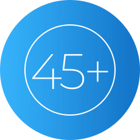
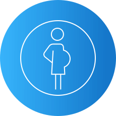
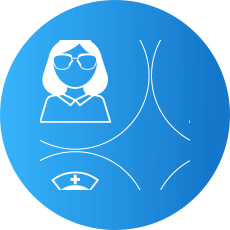
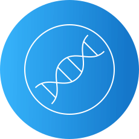
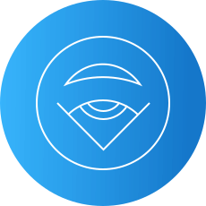
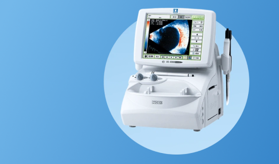

Комплексная диагностика зрения в зависимости от индивидуальных показаний может включать в себя исследования:
Визометрия
Рефрактометрия
Тонометрия
Периметрия
Оптическая когеррентная томография
Аберрометрия
Исследование цветового зрения
Гониоскопия
Биомикроскопия
Офтальмоскопия
Пупиллометрия
Ленсметрия (линзметрия)
Пахиметрия
Кератометрия
Биометрия
Кому требуется особое внимание и регулярная диагностика?
Старше 45 лет
Беременным женщинам
С отягощенной наследственностью
С высокими степенями близорукости
Страдающим сахарным диабетом
Пользователям контактных линз
Оборудование для диагностики в клинике «Эксимер»

Эхоскан US–4000 NIDEK
объединяет A–B скан, ультразвуковой пахиметр
Преимущества диагностики в клинике «Эксимер»
В нашей клинике прием ведут только высококвалифицированные специалисты, имеющие большой опыт проведения всех видов современных диагностических процедур.
Современное оборудование, имеющееся в арсенале врачей клиники «Эксимер», позволяет анализировать состояние зрительной системы с высочайшей точностью, что в случае обнаружения каких-либо отклонений в работе глаз крайне важно для постановки правильного диагноза и выбора эффективной методики лечения.
Все исследования проводятся в сжатые сроки.
Актуальные вопросы
Проводить процедуру лазерной коррекции зрения после диагностики не рекомендуется по нескольким причинам.
Во-первых, перед лазерной коррекцией зрения необходимо сдать ряд анализов крови: на ВИЧ, RW, гепатиты B и C. Результаты готовятся в течение 1-2 дней. Сдать все необходимые анализы можно в клинике “Эксимер”.
Во-вторых, во время диагностики проводятся контактные исследования, которые способны временно изменить поверхность роговицы. По этой же причине рекомендуется отказаться от ношения контактных линз (мягких — за 1 сутки, жестких — за 1 месяц до процедуры лазерной коррекции зрения).
Ряд диагностических исследований предполагает расширение зрачка, что влияет на качество зрения пациента. Для восстановления состояния зрительной системы требуется время, чтобы эффект коррекции зрения был оптимальным.
В некоторых случаях диагностика может выявить необходимость укрепления сетчатки (лазеркоагуляция). После этой процедуры коррекцию зрения можно выполнять только через 14-90 дней, в зависимости от показаний.
Выписку из медкарты с результатами диагностики зрения можно получить в электронном виде на указанный в договоре с клиникой “Эксимер” электронный адрес или на бумажном носителе (по запросу).
Диагностические обследования зрения во время беременности не вредны, а рекомендуются всем женщинам даже при отсутствии проблем со здоровьем.
Гормональные изменения в женском организме могут влиять на зрение, особенно на состояние сетчатки глаза. Для своевременного выявления этих изменений женщинам рекомендуется проходить офтальмологические обследования минимум дважды: на 10-14 неделе и 34-36 неделе беременности.
Детское отделение клиники “Эксимер” оснащено современными компьютеризированными аппаратами, с помощью которых диагностика зрения у детей проводится бесконтактно и комфортно. Специальные педиатрические приборы обеспечивают высокую точность данных и не зависят от действий ребенка.
Офтальмологи-педиатры с помощью тщательной диагностики зрения могут обнаружить заболевание глаз на самой ранней стадии и назначить ребенку лечение щадящими методами.
Особенность многих заболеваний глаз заключается в том, что они способны протекать без симптомов (катаракта, глаукома, дистрофии сетчатки). Одни и те же симптомы могут быть вызваны разными причинами. Точную картину состояния зрительной системы можно получить только с помощью специальных офтальмологических приборов во время диагностики зрения. Поэтому рекомендуется проходить комплексное обследование один раз в год даже тем людям, у кого острота зрения — “единица”.
Высокотехнологичное оборудование в клинике “Эксимер” позволяет провести тщательное офтальмологическое обследование более чем по 100 параметрам зрения.
Отзывы о диагностике зрения
Анна М.
Огромная благодарность Екатерине Сергеевне за неравнодушие,
доброе и профессиональное отношение к пациенту
02.04.2025
Анна М.
Огромная благодарность Екатерине Сергеевне за неравнодушие,
доброе и профессиональное отношение к пациенту
02.04.2025
Анна М.
Огромная благодарность Екатерине Сергеевне за неравнодушие,
доброе и профессиональное отношение к пациенту